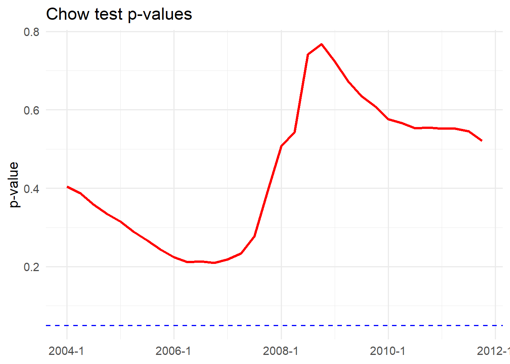
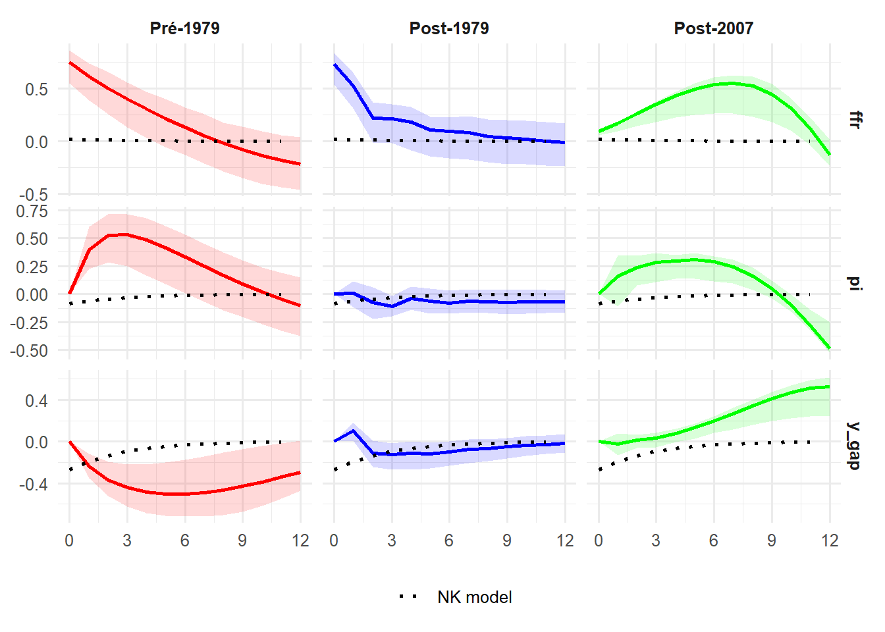
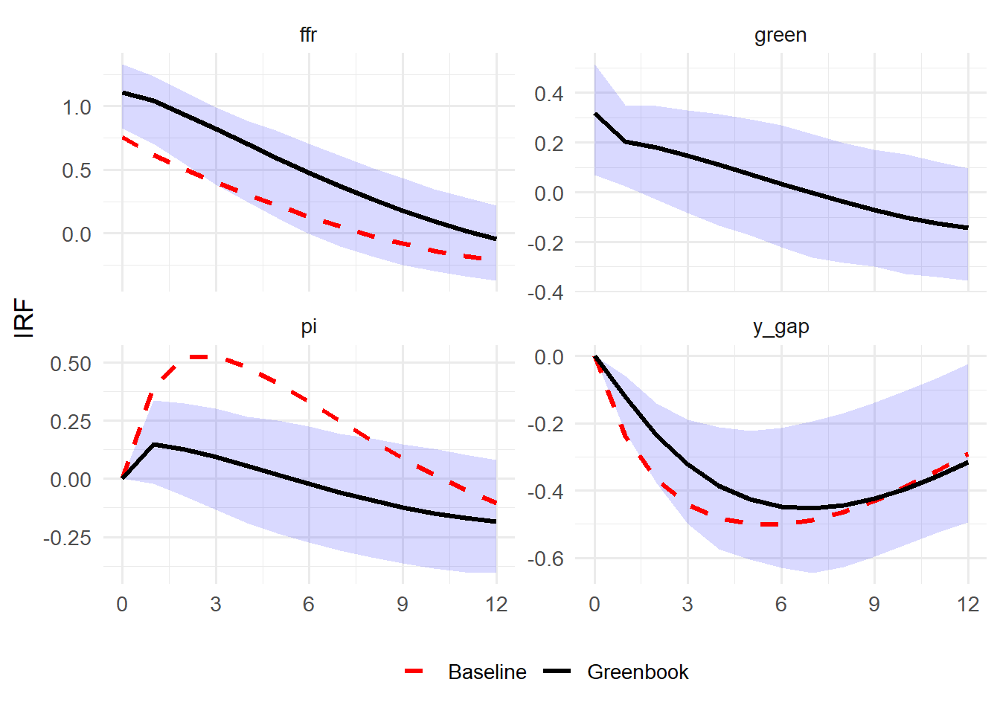
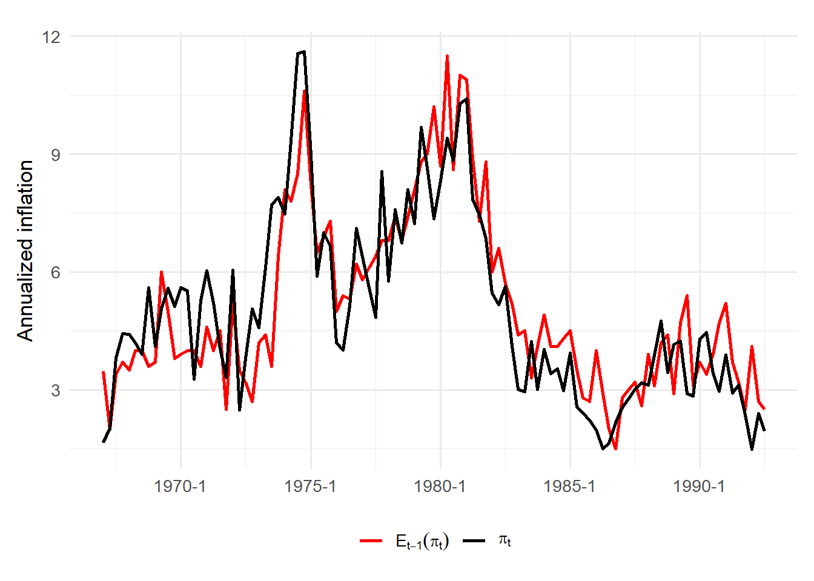
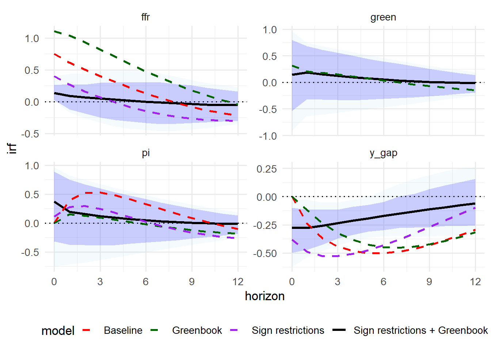
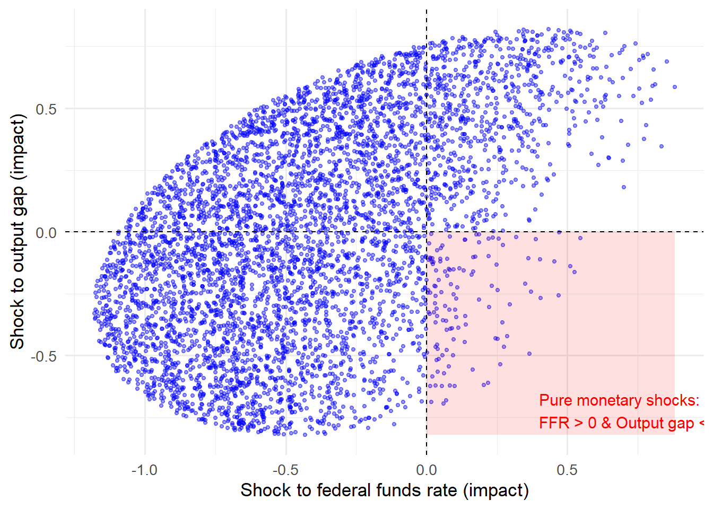
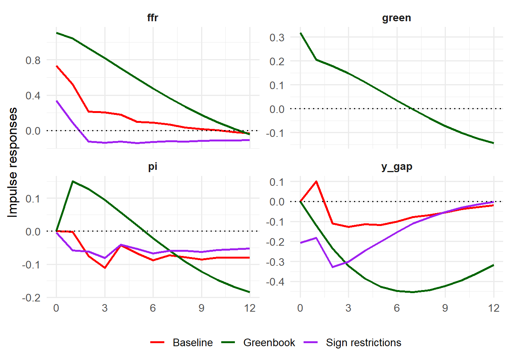
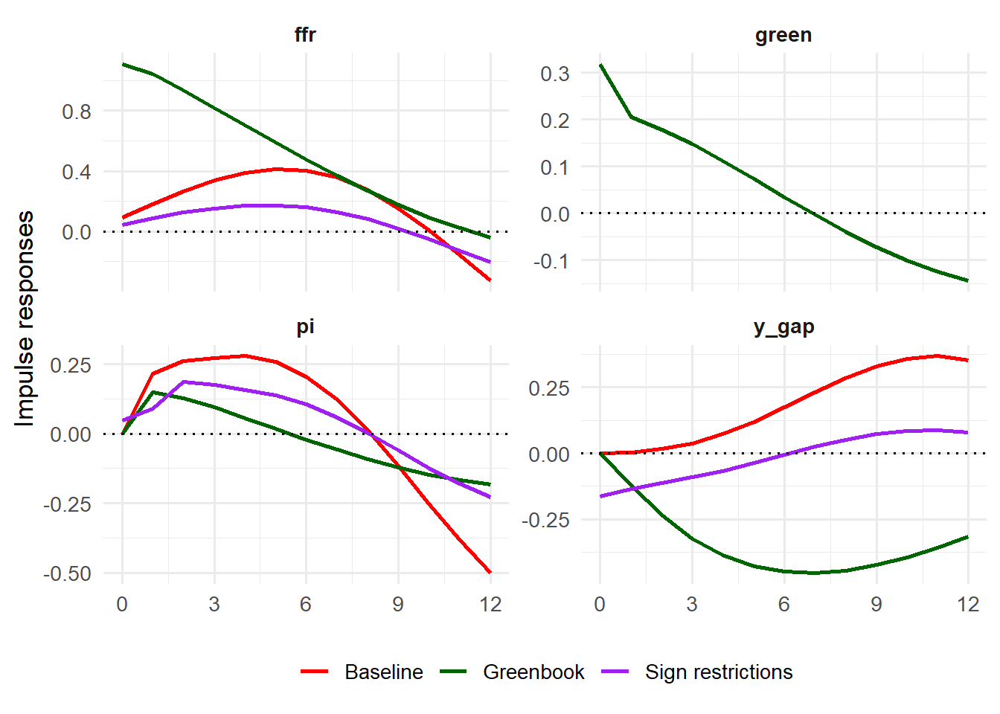

packages <- c(
"tidyverse",
"lubridate",
"zoo",
"fredr",
"openxlsx",
"mFilter",
"R.matlab",
"strucchange",
"vars"
)
to_install <- packages[!packages %in% installed.packages()[, "Package"]]
if(length(to_install) > 0) install.packages(to_install)
for(p in packages) library(p, character.only = TRUE)
source("utils.R")PP_project
Solving the price puzzle
This project aims at studying the price puzzle, a macroeconomic paradox observed by Sims (1980), when an increase of interest rate is sometimes followed by an increase of inflation in macroeconometric models.
It is designed as follows :
- Presentation of the data
- Reminder of the results of the NK framework
- Modeling of the MP in US according to Castelnuovo and Surico (2010)
- Solving the price puzzle according different strategies
- Extensions
Output gap (https://www.cbo.gov/data/budget-economic-data)

GDP Deflator and Inflation (FREDR)
fredr::fredr_set_key("2081d90b146ea654a4866e909178bfaf")
gdpdef <- fredr::fredr(
series_id = "GDPDEF",
observation_start = as.Date("1960-01-01")
) %>%
transmute(
date = as.yearqtr(date),
p_gdp = log(value)
) %>%
arrange(date)
pi_gdp <- gdpdef %>%
mutate(
pi = 400 * (p_gdp - lag(p_gdp)) # inflation trimestrielle annualisée
) %>%
drop_na() %>%
dplyr::select(date, pi)
ggplot(pi_gdp, aes(date, pi)) +
geom_line() +
theme_minimal() +
labs(x = NULL, y = "Quarterly inflation (annualized)")
ggsave("sorties/inflation.png", width = 7, height = 4, dpi = 300)ffr_m <- fredr::fredr(
series_id = "FEDFUNDS",
observation_start = as.Date("1960-01-01")
) %>%
transmute(
date_m = as.yearmon(date),
ffr = value
)
ffr_q <- ffr_m %>%
mutate(
date = as.yearqtr(date_m)
) %>%
group_by(date) %>%
summarise(
ffr = mean(ffr, na.rm = TRUE)
) %>%
ungroup() %>%
arrange(date)
# %>%
# filter(date <= "2006 Q4")
ggplot(ffr_q, aes(date, ffr)) +
geom_line() +
theme_minimal() +
labs(x = NULL, y = "Federal Funds Rate")
ggsave("sorties/ffr.png", width = 7, height = 4, dpi = 300)df <- read.xlsx("data/gPGDP_1967_1984.xlsx")
df2 <- read.xlsx("data/gPGDP_1985_Last.xlsx")
df_long <- df %>%
mutate(Date = as.character(Date)) %>%
separate(
Date,
into = c("year", "qtr"),
sep = "\\.",
convert = TRUE
) %>%
pivot_longer(
cols = starts_with("gPGDP_"),
names_to = "vintage",
values_to = "forecast"
) %>%
mutate(
vintage_date = ymd(substr(vintage, 7, 14)),
quarter_start = make_date(year, (qtr - 1) * 3 + 1, 1),
target_quarter_start = quarter_start %m+% months(3)
) %>%
filter(!is.na(forecast))
selected_forecasts <- df_long %>%
mutate(
is_before = vintage_date < target_quarter_start,
distance_days = abs(as.numeric(vintage_date - target_quarter_start))
) %>%
group_by(year, qtr) %>%
arrange(
desc(is_before),
distance_days
) %>%
slice(1) %>%
ungroup()
result <- selected_forecasts %>%
transmute(
quarter = paste0(year, "Q", qtr),
target_quarter = paste0(
year(target_quarter_start),
"Q",
lubridate::quarter(target_quarter_start)
),
forecast_next_q = forecast,
vintage_date
) %>%
slice(-c(1:4)) %>%
slice(-((n() - 3):n()))
df2_long <- df2 %>%
mutate(Date = as.character(Date)) %>%
separate(
Date,
into = c("year", "qtr"),
sep = "\\.",
convert = TRUE
) %>%
pivot_longer(
cols = starts_with("gPGDP_"),
names_to = "vintage",
values_to = "forecast"
) %>%
mutate(
vintage_date = ymd(substr(vintage, 7, 14)),
quarter_start = make_date(year, (qtr - 1) * 3 + 1, 1),
target_quarter_start = quarter_start %m+% months(3)
) %>%
filter(!is.na(forecast))
selected_forecasts2 <- df2_long %>%
mutate(
is_before = vintage_date < target_quarter_start,
distance_days = abs(as.numeric(vintage_date - target_quarter_start))
) %>%
group_by(year, qtr) %>%
arrange(
desc(is_before),
distance_days
) %>%
slice(1) %>%
ungroup()
result2 <- selected_forecasts2 %>%
transmute(
quarter = paste0(year, "Q", qtr),
target_quarter = paste0(
year(target_quarter_start),
"Q",
lubridate::quarter(target_quarter_start)
),
forecast_next_q = forecast,
vintage_date
) %>%
slice(-c(1:4)) %>%
slice(-((n() - 7):n()))
greenbook <- rbind(result,result2) %>%
mutate(date = as.yearqtr(quarter)) %>%
dplyr::select(date,forecast_next_q)
ggplot(greenbook, aes(date, forecast_next_q)) +
geom_line() +
theme_minimal() +
labs(x = NULL, y = "Inflation forecasts for next quarter")
ggsave("sorties/inflation_forecast.png", width = 7, height = 4, dpi = 300)We do a Chow test to highlight the change of regime post 1979.
df_us <- ogap %>%
inner_join(pi_gdp, by = "date") %>%
inner_join(ffr_q, by = "date") %>%
arrange(date)
print(head(df_us, 10)) date y_gap pi ffr
1 1960 Q2 -0.8836612 1.0098727 3.696667
2 1960 Q3 -1.3881528 1.3683171 2.936667
3 1960 Q4 -3.5783399 1.1838135 2.296667
4 1961 Q1 -3.8258301 0.8727463 2.003333
5 1961 Q2 -3.0387802 0.9220135 1.733333
6 1961 Q3 -2.0514700 1.0219730 1.683333
7 1961 Q4 -1.0342937 1.2483689 2.400000
8 1962 Q1 -0.2418696 2.0551249 2.456667
9 1962 Q2 -0.3813454 0.6574374 2.606667
10 1962 Q3 -0.2496653 0.8328867 2.846667We run a Chow test to find the best break point, following Paul Volcker’s appointment at the Fed.
df <- df_us %>%
filter(date <= as.yearqtr("2008 Q4")) %>%
dplyr::select(-date)
lags <- VARselect(df)$selection["SC(n)"]
var_fit <- VAR(df, p = lags, type = "const")
ffr_eq <- var_fit$varresult$ffr
df_model <- ffr_eq$model
y <- df_model[[1]]
X <- model.matrix(ffr_eq)
dates_est <- (df_us %>% filter(date <= as.yearqtr("2008 Q4"))) %>%
pull(date)
dates_est <- dates_est[(lags + 1):length(dates_est)]
dates_est_chr <- as.character(dates_est)
quarters <- seq(as.yearqtr("1974 Q1"), as.yearqtr("1981 Q4"), by = 0.25)
p_values <- numeric(length(quarters))
for (i in seq_along(quarters)) {
bp <- which(dates_est == quarters[i])
if (length(bp) == 1 && bp > 1 && bp < length(y)) {
chow <- sctest(y ~ X - 1, type = "Chow", point = bp)
p_values[i] <- chow$p.value
} else {
p_values[i] <- NA
}
}
p_df <- data.frame(
Quarter = quarters,
P_value = p_values
)
ggplot(p_df, aes(x = Quarter, y = P_value)) +
geom_line(color = "red", linewidth = 1.2) +
geom_hline(yintercept = 0.05, linetype = "dashed", color = "blue") +
theme_minimal(base_size = 14) +
labs(
title = "Chow test p-values",
x = NULL,
y = "p-value"
)
ggsave("sorties/chow1.png", width = 7, height = 4, dpi = 300)df_us_sub <- df_us %>%
filter(date >= as.yearqtr("1979 Q4"))
df <- df_us_sub %>%
dplyr::select(-date)
select_order <- VARselect(df)
lags <- select_order$selection["SC(n)"]
var_fit <- VAR(df, p = lags, type = "const")
ffr_eq <- var_fit$varresult$ffr
df_model <- ffr_eq$model
y <- df_model[[1]]
X <- model.matrix(ffr_eq)
dates_full <- df_us_sub$date
dates_est <- dates_full[(lags + 1):length(dates_full)]
quarters <- seq(as.yearqtr("2006 Q1"), as.yearqtr("2012 Q1"), by = 0.25)
p_values <- numeric(length(quarters))
for (i in seq_along(quarters)) {
bp <- which(dates_est == quarters[i])
if (length(bp) == 1 && bp > 1 && bp < length(y)) {
chow <- sctest(y ~ X - 1, type = "Chow", point = bp)
p_values[i] <- chow$p.value
} else {
p_values[i] <- NA
}
}
p_df <- data.frame(
Quarter = quarters,
P_value = p_values
)
ggplot(p_df, aes(x = Quarter, y = P_value)) +
geom_line(color = "red", linewidth = 1.2) +
geom_hline(yintercept = 0.05, linetype = "dashed", color = "blue") +
theme_minimal(base_size = 14) +
labs(
title = "Chow test p-values (FFR equation)",
x = NULL,
y = "p-value"
)
ggsave("sorties/chow2.png", width = 7, height = 4, dpi = 300)Here we introduce the NK model and its properties.
The parameters are taken from Clarida, R., Galí, J., & Gertler, M. (2000).
Let’s observe the IRFs.
mat_data <- R.matlab::readMat("nk_model/Output/nk_model_results.mat")
oo_matrix <- mat_data$oo.
irfs_list <- oo_matrix[[20]]
x_eb <- as.numeric(irfs_list[[7]])
pi_eb <- as.numeric(irfs_list[[8]])
int_eb <- as.numeric(irfs_list[[9]])
nk_df <- data.frame(
horizon = 0:(length(x_eb)-1),
y_gap = x_eb,
pi = pi_eb,
ffr = int_eb,
check.names = FALSE
) %>%
pivot_longer(cols = -horizon, names_to = "variable", values_to = "irf")
ggplot(nk_df, aes(x = horizon, y = irf)) +
theme_minimal(base_size = 14) +
geom_line(size = 1, color = "red") +
facet_wrap(~variable, nrow = 3, scales = "free_y") +
labs(title = NULL,
x = NULL,
y = "NK IRFs") +
geom_hline(yintercept = 0, color = "grey", linetype = "solid") +
geom_vline(xintercept = 0, color = "grey", linetype = "solid") +
scale_x_continuous(breaks = seq(0, 12, by = 3)) +
theme(
legend.position = "none",
strip.text = element_text(face = "bold", size = 12),
panel.grid.major = element_line(color = "gray90")
)
ggsave("sorties/nk.png", width = 4, height = 8, dpi = 300)Based on this NK model, we simulate artificial but economically realistic macroeconomic time series and then estimate a VAR on these simulated data to study impulse responses and identification issues under controlled structural assumptions
#matlab_exec <- "C:/Program Files/MATLAB/R2024b/bin/matlab.exe"
#system(sprintf('"%s" -batch "dynare artificial_data.mod noclearall"',matlab_exec))
sim_data <- R.matlab::readMat("artificial_data/Output/artificial_data_results.mat")
oo_matrix <- sim_data$oo.
mat <- oo_matrix[,,1][[3]]
x_sim <- mat[1, ]
pi_sim <- mat[2, ]
int_sim <- mat[3, ]
pi_star <- 2
i_star <- 3
df_sim <- tibble(
y_gap = as.numeric(x_sim),
pi = as.numeric(pi_sim) + pi_star,
ffr = as.numeric(int_sim) + i_star
)
lag_selection <- VARselect(df_sim, lag.max = 6)
p_sim <- lag_selection$selection["SC(n)"]
print(lag_selection)$selection
AIC(n) HQ(n) SC(n) FPE(n)
3 1 1 3
$criteria
1 2 3 4 5
AIC(n) -1.131065e+01 -1.131490e+01 -1.131567e+01 -1.125888e+01 -1.120331e+01
HQ(n) -1.122880e+01 -1.117166e+01 -1.111105e+01 -1.099286e+01 -1.087591e+01
SC(n) -1.110851e+01 -1.096116e+01 -1.081034e+01 -1.060194e+01 -1.039477e+01
FPE(n) 1.224211e-05 1.219108e-05 1.218384e-05 1.290011e-05 1.364439e-05
6
AIC(n) -1.119010e+01
HQ(n) -1.080131e+01
SC(n) -1.022995e+01
FPE(n) 1.383640e-05cat("Lag optimal (SC):", p_sim, "\n")Lag optimal (SC): 1 var_sim <- VAR(df_sim, p = 1, type = "const")
irf_sim <- irf(
var_sim,
impulse = "ffr",
response = c("y_gap", "pi", "ffr"),
n.ahead = 12,
boot = TRUE,
runs = 500,
ortho = TRUE
)
df_irf_sim <- irf_to_df(irf_sim, impulse_name = "ffr")
ggplot(df_irf_sim, aes(x = horizon, y = irf)) +
geom_ribbon(aes(ymin = lower, ymax = upper), fill = "blue", alpha = 0.15) +
geom_line(size = 1.2, color = "red") +
geom_hline(yintercept = 0, linetype = "dashed") +
scale_x_continuous(breaks = seq(0, 12, by = 3)) +
facet_wrap(~ variable,nrow=3, scales = "free_y") +
labs(
title = NULL,
x = "Quarters",
y = "SVAR IRFs"
) +
theme_minimal(base_size = 13)
ggsave("sorties/artificial_price_puzzle.png",
width = 4, height = 8, dpi = 300)Let’s construct a SVAR model based on [og(t) pi(t) ffr(t)]
# echo: false
Y_pre_ts <- df_us %>%
filter(date <= as.yearqtr("1979 Q3")) %>%
df_to_ts()
Y_post_ts <- df_us %>%
filter(date >= as.yearqtr("1979 Q4"),
date <= as.yearqtr("2006 Q4")) %>%
df_to_ts()
Y_end_ts <- df_us %>%
filter(date >= as.yearqtr("2009 Q2"),
date <= as.yearqtr("2019 Q4")) %>%
df_to_ts()
lags_pre <- VARselect(Y_pre_ts, lag.max = 8, type = "const")
lags_post <- VARselect(Y_post_ts, lag.max = 8, type = "const")
lags_end <- VARselect(Y_end_ts, lag.max = 8, type = "const")
p_pre <- lags_pre$selection["SC(n)"]
p_post <- lags_post$selection["SC(n)"]
p_end <- lags_end$selection["SC(n)"]
cat("Lags retenus (pré) :", p_pre, "\n")Lags retenus (pré) : 1 cat("Lags retenus (post) :", p_post, "\n")Lags retenus (post) : 3 cat("Lags retenus (post) :", p_end, "\n")Lags retenus (post) : 2 var_pre <- VAR(Y_pre_ts, p = p_pre, type = "const")
var_post <- VAR(Y_post_ts, p = p_post, type = "const")
var_end <- VAR(Y_end_ts, p = p_post, type = "const")
irf_pre <- irf(
var_pre,
impulse = "ffr",
response = c("y_gap", "pi", "ffr"),
n.ahead = 12,
boot = TRUE,
runs = 500,
ortho = TRUE # Cholesky
)
irf_post <- irf(
var_post,
impulse = "ffr",
response = c("y_gap", "pi", "ffr"),
n.ahead = 12,
boot = TRUE,
runs = 500,
ortho = TRUE
)
irf_end <- irf(
var_end,
impulse = "ffr",
response = c("y_gap", "pi", "ffr"),
n.ahead = 12,
boot = TRUE,
runs = 500,
ortho = TRUE
)
df_irf_pre <- irf_to_df(irf_pre, impulse_name = "ffr")
df_irf_post <- irf_to_df(irf_post, impulse_name = "ffr")
df_irf_end <- irf_to_df(irf_end, impulse_name = "ffr")
df_irf_pre$period <- factor("Pré-1979", levels = c("Pré-1979", "Post-1979","Post-2007"))
df_irf_post$period <- factor("Post-1979", levels = c("Pré-1979", "Post-1979","Post-2007"))
df_irf_end$period <- factor("Post-2007", levels = c("Pré-1979", "Post-1979","Post-2007"))
nk_df_long <- nk_df %>%
mutate(lower = irf, upper = irf) %>%
expand_grid(period = c("Pré-1979", "Post-1979","Post-2007"))
df_irf_all <- bind_rows(df_irf_pre, df_irf_post,df_irf_end)
df_irf_all_plot <- df_irf_all %>%
mutate(period_factor = factor(period, levels = c("Pré-1979", "Post-1979","Post-2007")))
nk_df_long_plot <- nk_df_long %>%
mutate(period_factor = factor(period, levels = c("Pré-1979", "Post-1979","Post-2007")))
ggplot() +
geom_ribbon(data = df_irf_all_plot,
aes(x = horizon, ymin = lower, ymax = upper, fill = period_factor),
alpha = 0.15, color = NA, show.legend = FALSE) +
geom_line(data = df_irf_all_plot,
aes(x = horizon, y = irf, color = period_factor),
size = 1, show.legend = FALSE) +
geom_line(data = nk_df_long_plot,
aes(x = horizon, y = irf, linetype = "NK model"),
color = "black", size = 1) +
facet_grid(variable ~ period_factor, scales = "free_y") +
scale_color_manual(values = c("Pré-1979" = "red", "Post-1979" = "blue","Post-2007" = "green")) +
scale_fill_manual(values = c("Pré-1979" = "red", "Post-1979" = "blue", "Post-2007" = "green")) +
scale_linetype_manual(name = "", values = c("NK model" = "dotted")) +
labs(title = NULL, x = NULL, y = NULL) +
scale_x_continuous(breaks = seq(0, 12, by = 3)) +
theme_minimal(base_size = 12) +
theme(
legend.position = "bottom",
plot.title = element_text(face = "bold", hjust = 0.5,size = 12),
strip.text = element_text(face = "bold")
)
ggsave("sorties/baseline.png", width = 7, height = 4, dpi = 300)We want to illustrate where the price puzzle comes from before 1979 and after 2007. We plot the Forecast Error Variance Decomposition (FEVD) after the ffr shock.
fevd_pre <- fevd(var_pre, n.ahead = 12)
fevd_post <- fevd(var_post, n.ahead = 12)
fevd_end <- fevd(var_end, n.ahead = 12)
fevd_to_df <- function(fevd_obj, var_name, period_label) {
mat <- fevd_obj[[var_name]] # matrice horizons x variables
df <- as.data.frame(mat)
df$horizon <- 0:(nrow(df) - 1)
df %>%
pivot_longer(
cols = -horizon,
names_to = "shock",
values_to = "share"
) %>%
mutate(period = period_label)
}
fevd_pi_all <- bind_rows(
fevd_to_df(fevd_pre, "pi", "Pré-1979"),
fevd_to_df(fevd_post, "pi", "1979-2006"),
fevd_to_df(fevd_end, "pi", "Post-2009")
) %>%
mutate(
period = factor(period, levels = c("Pré-1979", "1979-2006", "Post-2007"))
)
ggplot(fevd_pi_all, aes(x = horizon, y = share, fill = shock)) +
geom_area(position = "stack") +
facet_wrap(~ period, nrow = 1) +
scale_y_continuous(labels = scales::percent_format(accuracy = 1)) +
labs(
title = NULL,
x = "Quarters",
y = "Share of forecast variance (%)"
) +
theme_minimal(base_size = 12) +
theme(
strip.text = element_text(face = "bold"),
plot.title = element_text(face = "bold", hjust = 0.5)
)
ggsave("sorties/fevd.png", width = 7, height = 4, dpi = 300)Finally, let’s see the estimated coefficients of the VAR.
lapply(var_pre$varresult, function(eq) coef(eq))$y_gap
y_gap.l1 pi.l1 ffr.l1 const
0.9993527 0.1640469 -0.3173465 1.0524698
$pi
y_gap.l1 pi.l1 ffr.l1 const
-0.04246689 0.47596593 0.52646227 -0.48356329
$ffr
y_gap.l1 pi.l1 ffr.l1 const
0.1851626 0.1151137 0.8152307 0.5151029 lapply(var_post$varresult, function(eq) coef(eq))$y_gap
y_gap.l1 pi.l1 ffr.l1 y_gap.l2 pi.l2 ffr.l2
1.09202429 0.01026345 0.13663942 0.03284261 0.17233679 -0.39770459
y_gap.l3 pi.l3 ffr.l3 const
-0.22738382 -0.18583750 0.23289788 0.16439747
$pi
y_gap.l1 pi.l1 ffr.l1 y_gap.l2 pi.l2 ffr.l2
0.228699870 0.689683250 0.007192187 -0.299386336 0.090202782 -0.146833720
y_gap.l3 pi.l3 ffr.l3 const
0.127716230 0.187475696 0.104202428 0.256021093
$ffr
y_gap.l1 pi.l1 ffr.l1 y_gap.l2 pi.l2 ffr.l2 y_gap.l3
0.7307675 0.1249359 0.7169209 -0.2821247 0.5416494 -0.3172877 -0.2630269
pi.l3 ffr.l3 const
-0.2896353 0.4606265 -0.2671760 lapply(var_end$varresult, function(eq) coef(eq))$y_gap
y_gap.l1 pi.l1 ffr.l1 y_gap.l2 pi.l2 ffr.l2
0.808541088 -0.067733750 -0.269754056 0.079282560 -0.044974621 0.963047562
y_gap.l3 pi.l3 ffr.l3 const
0.000701292 0.040631765 -0.495023220 -0.057700052
$pi
y_gap.l1 pi.l1 ffr.l1 y_gap.l2 pi.l2 ffr.l2
0.056214829 0.054105468 1.719056198 -0.487860622 -0.006660191 -0.714818344
y_gap.l3 pi.l3 ffr.l3 const
0.192155711 0.039960762 -0.745912385 0.768113339
$ffr
y_gap.l1 pi.l1 ffr.l1 y_gap.l2 pi.l2 ffr.l2
0.023962687 0.016113146 1.856971698 0.014819687 0.021223226 -0.651951116
y_gap.l3 pi.l3 ffr.l3 const
-0.018922813 0.017175510 -0.347499810 -0.003496524 print(cov(resid(var_pre))) y_gap pi ffr
y_gap 0.72192649 0.06827755 0.1371414
pi 0.06827755 1.37637857 0.2960683
ffr 0.13714139 0.29606828 0.6294675summary(var_pre$varresult$pi)
Call:
lm(formula = y ~ -1 + ., data = datamat)
Residuals:
Min 1Q Median 3Q Max
-3.0634 -0.9151 -0.1355 0.8281 3.6898
Coefficients:
Estimate Std. Error t value Pr(>|t|)
y_gap.l1 -0.04247 0.06447 -0.659 0.512
pi.l1 0.47597 0.10275 4.632 1.54e-05 ***
ffr.l1 0.52646 0.11655 4.517 2.36e-05 ***
const -0.48356 0.35338 -1.368 0.175
---
Signif. codes: 0 '***' 0.001 '**' 0.01 '*' 0.05 '.' 0.1 ' ' 1
Residual standard error: 1.197 on 73 degrees of freedom
Multiple R-squared: 0.8137, Adjusted R-squared: 0.806
F-statistic: 106.3 on 3 and 73 DF, p-value: < 2.2e-16summary(var_post$varresult$pi)
Call:
lm(formula = y ~ -1 + ., data = datamat)
Residuals:
Min 1Q Median 3Q Max
-1.40401 -0.45231 -0.04081 0.40912 1.68735
Coefficients:
Estimate Std. Error t value Pr(>|t|)
y_gap.l1 0.228700 0.122678 1.864 0.0653 .
pi.l1 0.689683 0.096708 7.132 1.86e-10 ***
ffr.l1 0.007192 0.082504 0.087 0.9307
y_gap.l2 -0.299386 0.158970 -1.883 0.0627 .
pi.l2 0.090203 0.117296 0.769 0.4438
ffr.l2 -0.146834 0.094406 -1.555 0.1232
y_gap.l3 0.127716 0.109150 1.170 0.2449
pi.l3 0.187476 0.104506 1.794 0.0760 .
ffr.l3 0.104202 0.078356 1.330 0.1867
const 0.256021 0.141876 1.805 0.0743 .
---
Signif. codes: 0 '***' 0.001 '**' 0.01 '*' 0.05 '.' 0.1 ' ' 1
Residual standard error: 0.6402 on 96 degrees of freedom
Multiple R-squared: 0.8762, Adjusted R-squared: 0.8646
F-statistic: 75.51 on 9 and 96 DF, p-value: < 2.2e-16Before 1979, the ffr coefficient is positive and large. Before Volcker, the Fed typically raised interest rates in response to expected increases in inflation (poor monetary policy rules, focus on output and unemployment, weak anti-inflation credibility). The VAR confuses cause and consequence.
No Phillips curve effect : output gap has no effect on inflation.
Here no short effect, only a medium negative and significant + functioning Phillips curve.
After 1979, the Fed aggressively fought inflation (Volcker disinflation),
breakdown of the standard VAR structure. Coefficients on interest rates are huge and unstable. It is typical of the ZLB / QE environment.
Apparent but spurious price puzzle.
Trying the fix the puzzle
Following Castelnuovo et al., we propose a sign restrictions approach. We impose that after a monetary shock, ffr > O and outputggap < 0. Inflations remains unconstrained.
chol_pre3 <- irf_pre$irf$ffr
vars_pre3 <- colnames(chol_pre3)
irf_pre3_df <- bind_rows(
lapply(1:3, function(j)
tibble(variable = vars_pre3[j], h = 0:12, irf = chol_pre3[1:13, j])
)
) %>%
mutate(model = "Baseline")
sr_res <- compute_sr_irf(
var_fit = var_pre,
restrictions = sr_monetary,
horizon = 12,
n.sim = 5000,
model_name = "Sign restrictions"
)
irf_summary <- sr_res$irf_summary
irfs_kept <- sr_res$irfs_kept
B_kept <- sr_res$B_kept
B_all <- sr_res$B_all
ggplot() +
geom_ribbon(
data = irf_summary,
aes(x = horizon, ymin = lower90, ymax = upper90),
fill = "lightblue", alpha = .15
) +
geom_ribbon(
data = irf_summary,
aes(x = horizon, ymin = lower68, ymax = upper68),
fill = "blue", alpha = .30
) +
geom_line(
data = irf_summary,
aes(x = horizon, y = irf,
color = "Sign restrictions",
linetype = "Sign restrictions"),
size = 1.2
) +
geom_line(
data = irf_pre3_df,
aes(x = h, y = irf,
color = "Baseline",
linetype = "Baseline"),
size = 1
) +
facet_wrap(~variable, scales = "free_y") +
scale_color_manual(values = c(
"Baseline" = "red",
"Sign restrictions" = "black"
)) +
scale_linetype_manual(values = c(
"Baseline" = "dashed",
"Sign restrictions" = "solid"
)) +
scale_x_continuous(breaks = seq(0,12,3)) +
labs(x = NULL, y = "IRF") +
theme_minimal(base_size = 13) +
theme(
legend.position = "bottom",
legend.title = element_blank()
) +
guides(linetype = "none")
ggsave("sorties/sr.png", width = 7, height = 4, dpi = 300)df_shocks <- purrr::map_dfr(
B_all,
~ tibble(
ffr_shock = .x["ffr", "ffr"],
ygap_shock = .x["y_gap", "ffr"],
pi_shock = .x["pi", "ffr"]
)
)
xmin <- 0
xmax <- max(df_shocks$ffr_shock, na.rm = TRUE)
ymin <- min(df_shocks$ygap_shock, na.rm = TRUE)
ymax <- 0
ggplot(df_shocks, aes(x = ffr_shock, y = ygap_shock)) +
geom_point(
alpha = 0.4,
color = "blue1",
size = 1
) +
annotate(
"rect",
xmin = xmin, xmax = xmax,
ymin = ymin, ymax = ymax,
fill = "red",
alpha = 0.12
) +
geom_vline(xintercept = 0, linetype = "dashed", linewidth = 0.5) +
geom_hline(yintercept = 0, linetype = "dashed", linewidth = 0.5) +
annotate(
"text",
x = 0.4,
y = ymin * 0.85,
label = "Admissible region:\nFFR > 0 & Output gap < 0",
color = "red",
size = 4,
hjust = 0
) +
labs(
x = "Shock to federal funds rate (impact)",
y = "Shock to output gap (impact)"
) +
theme_minimal(base_size = 13)
ggsave("sorties/rotation.png", width = 7, height = 4, dpi = 300)In VARs, supply and demand shocks are mixed. Before 1979, many shocks are supply shocks : both inflation and ffr increase, and output gap decreases. Because response of inflation to output gap is positive, removing these positive responses reduce the level of inflation. But it doesn’t remove the price puzzle.
We propose now to augment the VAR. As suggested by Casteluovo, we get the inflation forecasts from the Greenbook.
green <- read.xlsx("data/greenbook.xlsx")
df <- df_us %>%
mutate(date = gsub(" ", "", date)) %>%
inner_join(green, by = "date")
df_inf <- df %>%
dplyr::select(date, pi, green) %>%
mutate(
pi = as.numeric(pi),
green = as.numeric(green),
date = as.yearqtr(date, format = "%YQ%q")
)
ggplot(df_inf, aes(x = date)) +
theme_minimal() +
geom_line(aes(y = pi, color = "pi"), linewidth = 1) +
geom_line(aes(y = green, color = "exp"), linewidth = 1) +
scale_color_manual(values = c("pi" = "blue", "exp" = "darkgreen")) +
labs(
x = "Date",
y = "Value",
color = "Variable",
title = "Inflation vs Expectations (Greenbook)"
) +
theme(axis.text.x = element_text(angle = 45, hjust = 1))
df_ts <- df_to_ts(df)
lags_exp <- VARselect(df_ts, lag.max = 8, type = "const")$selection["SC(n)"]
VAR_exp <- VAR(df_ts, p = lags_exp, type = "const")
irf_exp <- irf(
VAR_exp,
impulse = "ffr",
response = c("green", "y_gap", "pi", "ffr"),
n.ahead = 12,
boot = TRUE,
runs = 500,
ortho = TRUE
)
irf_exp_df <- irf_to_df(irf_exp, impulse_name = "ffr") %>%
mutate(model = "Greenbook")
irf_pre_df <- irf_to_df(irf_pre, impulse_name = "ffr") %>%
mutate(model = "Baseline")
green_missing <- irf_pre_df %>%
filter(variable == "pi") %>%
mutate(
variable = "green",
irf = NA, lower = NA, upper = NA
)
irf_pre_df <- bind_rows(irf_pre_df, green_missing)
irf_green <- bind_rows(irf_exp_df, irf_pre_df) %>%
mutate(model = factor(model, levels = c("Baseline", "Greenbook")))
ggplot() +
geom_ribbon(
data = irf_green %>% filter(model == "Greenbook"),
aes(x = horizon, ymin = lower, ymax = upper, fill = model),
alpha = 0.15, color = NA, fill = "blue"
) +
geom_line(
data = irf_green,
aes(x = horizon, y = irf, color = model, linetype = model),
size = 1.1
) +
facet_wrap(~variable, scales = "free_y") +
scale_color_manual(values = c("Baseline" = "red",
"Greenbook" = "black")) +
scale_fill_manual(values = c("Greenbook" = "black")) +
scale_linetype_manual(values = c("Baseline" = "dashed",
"Greenbook" = "solid")) +
labs(
x = NULL,
y = "IRF",
title = NULL,
color = NULL,
linetype = NULL
) +
theme_minimal(base_size = 13) +
theme(legend.position = "bottom") +
guides(fill = "none") +
scale_x_continuous(breaks = seq(0, 12, by = 3))
ggsave("sorties/greenbook.png", width = 7, height = 4, dpi = 300)lapply(VAR_exp$varresult, function(eq) coef(eq))$y_gap
y_gap.l1 pi.l1 ffr.l1 green.l1 const
0.88344814 -0.06479383 -0.12814735 0.06907307 0.89994586
$pi
y_gap.l1 pi.l1 ffr.l1 green.l1 const
0.1155108 0.3869388 -0.0412038 0.6150082 0.2956949
$ffr
y_gap.l1 pi.l1 ffr.l1 green.l1 const
0.12795947 -0.06819249 0.87796099 0.21532011 0.23970362
$green
y_gap.l1 pi.l1 ffr.l1 green.l1 const
0.05852386 0.31090651 0.02032802 0.57521931 0.44321311 print(cov(resid(VAR_exp))) y_gap pi ffr green
y_gap 0.67556221 -0.03715114 0.3657608 0.04844547
pi -0.03715114 1.05263751 0.1288726 0.41435327
ffr 0.36576080 0.12887263 1.3958907 0.42357263
green 0.04844547 0.41435327 0.4235726 1.15097351df_leadlag <- df_inf %>%
arrange(date) %>%
mutate(
Et_pi_t = green,
Etm1_pi_t = dplyr::lag(green, 1),
Etm2_pi_t = dplyr::lag(green, 2)
) %>%
drop_na()
c1 <- cor(df_leadlag$pi, df_leadlag$Et_pi_t)
c2 <- cor(df_leadlag$pi, df_leadlag$Etm1_pi_t)
c3 <- cor(df_leadlag$pi, df_leadlag$Etm2_pi_t)
cat(sprintf("Correlation between inflation and current expectations: %.3f\n", c1))Correlation between inflation and current expectations: 0.865cat(sprintf("Correlation between inflation and 1-lagged expectations: %.3f\n", c2))Correlation between inflation and 1-lagged expectations: 0.867cat(sprintf("Correlation between inflation and 2-lagged expectations: %.3f\n", c3))Correlation between inflation and 2-lagged expectations: 0.770df_plot <- df_leadlag %>%
dplyr::select(date, pi, Etm1_pi_t) %>%
pivot_longer(-date, names_to = "series", values_to = "value")
ggplot(df_plot, aes(x = date, y = value, color = series)) +
geom_line(linewidth = 1) +
scale_color_manual(
values = c(
pi = "black",
Etm1_pi_t = "red"
),
labels = c(
pi = expression(pi[t]),
Etm1_pi_t = expression(E[t-1](pi[t]))
)
) +
labs(
x = NULL,
y = "Annualized inflation",
color = NULL,
title = NULL
) +
coord_cartesian(clip = "off") +
theme_minimal(base_size = 13) +
theme(
legend.position = "bottom",
plot.margin = margin(20, 10, 10, 10)
)
ggsave("sorties/greenbook_leadlag.png", width = 7, height = 4, dpi = 300)baseline_df <- irf_pre_df %>%
dplyr::select(variable, horizon, irf, model)
greenbook_df <- irf_exp_df %>%
dplyr::select(variable, horizon, irf, model)
sr1 <- irf_summary %>%
dplyr::select(variable,horizon,irf,model)
sr_gb_df <- compute_sr_irf(
var_fit = VAR_exp,
restrictions = sr_monetary,
horizon = 12,
n.sim = 5000,
model_name = "Sign restrictions + Greenbook"
)
sr2 <- sr_gb_df$irf_summary
B_all2 <- sr_gb_df$B_all
irf_all <- bind_rows(
baseline_df,
greenbook_df,
sr1
)
ggplot() +
geom_ribbon(
data = sr2,
aes(x = horizon, ymin = lower90, ymax = upper90),
fill = "lightblue", alpha = .12
) +
geom_ribbon(
data = sr2,
aes(x = horizon, ymin = lower68, ymax = upper68),
fill = "blue", alpha = .18
) +
geom_line(
data = sr2,
aes(x = horizon, y = irf, color = model, linetype = model),
linewidth = 1.2
) +
geom_line(
data = irf_all,
aes(x = horizon, y = irf, color = model, linetype = model),
linewidth = 1
) +
facet_wrap(~variable, scales="free_y") +
geom_hline(yintercept = 0, linetype="dotted") +
scale_x_continuous(breaks = seq(0,12,3)) +
scale_color_manual(values = c(
"Baseline" = "red",
"Greenbook" = "darkgreen",
"Sign restrictions" = "purple",
"Sign restrictions + Greenbook" = "black"
)) +
scale_linetype_manual(values = c(
"Baseline" = "dashed",
"Greenbook" = "dashed",
"Sign restrictions" = "dashed",
"Sign restrictions + Greenbook" = "solid"
)) +
theme_minimal(base_size = 13) +
theme(legend.position = "bottom")
ggsave("sorties/final.png", width=7, height=4, dpi=300)df_shocks2 <- purrr::map_dfr(
B_all2,
~ tibble(
ffr_shock = .x["ffr", "ffr"],
ygap_shock = .x["y_gap", "ffr"],
pi_shock = .x["pi", "ffr"]
)
)
xmin2 <- 0
xmax2 <- max(df_shocks2$ffr_shock, na.rm = TRUE)
ymin2<- min(df_shocks2$ygap_shock, na.rm = TRUE)
ymax2 <- 0
ggplot(df_shocks2, aes(x = ffr_shock, y = ygap_shock)) +
geom_point(
alpha = 0.4,
color = "blue1",
size = 1
) +
annotate(
"rect",
xmin = xmin2, xmax = xmax2,
ymin = ymin2, ymax = ymax2,
fill = "red",
alpha = 0.12
) +
geom_vline(xintercept = 0, linetype = "dashed", linewidth = 0.5) +
geom_hline(yintercept = 0, linetype = "dashed", linewidth = 0.5) +
annotate(
"text",
x = 0.4,
y = ymin * 0.85,
label = "Pure monetary shocks:\nFFR > 0 & Output gap < 0",
color = "red",
size = 4,
hjust = 0
) +
labs(
x = "Shock to federal funds rate (impact)",
y = "Shock to output gap (impact)"
) +
theme_minimal(base_size = 13)
ggsave("sorties/rotation2.png", width = 7, height = 4, dpi = 300)df_post <- df_us %>%
filter(date >= as.yearqtr("1979 Q4"),
date <= as.yearqtr("2007 Q1"))
Y_post_ts <- df_post %>%
dplyr::select(date, y_gap, pi, ffr) %>%
df_to_ts()
p_post <- VARselect(Y_post_ts, lag.max = 8, type = "const")$selection["SC(n)"]
var_post <- VAR(Y_post_ts, p = p_post, type = "const")
irf_post <- irf(
var_post,
impulse = "ffr",
response = c("y_gap", "pi", "ffr"),
n.ahead = 12,
boot = TRUE,
runs = 500
)
irf_post_df <- irf_to_df(
irf_post,
impulse_name = "ffr"
) %>%
mutate(model = "Baseline")
Y_post_gb_ts <- df_post %>%
inner_join(greenbook,by="date") %>%
dplyr::select(date, green=forecast_next_q, y_gap, pi, ffr) %>%
df_to_ts()
p_gb <- VARselect(Y_post_gb_ts, lag.max = 8, type = "const")$selection["SC(n)"]
var_post_gb <- VAR(Y_post_gb_ts, p = p_gb, type = "const")
irf_gb <- irf(
var_post_gb,
impulse = "ffr",
response = c("green","y_gap","pi","ffr"),
n.ahead = 12,
boot = TRUE,
runs = 500
)
irf_exp_df <- irf_to_df(
irf_exp,
impulse_name = "ffr"
) %>%
mutate(model = "Greenbook")
sr_post_df <- compute_sr_irf(
var_fit = var_post,
restrictions = sr_monetary,
horizon = 12,
n.sim = 5000,
model_name = "Sign restrictions"
)
sr_irf <- sr_post_df$irf_summary
irf_all_post <- bind_rows(
irf_post_df,
irf_exp_df,
sr_irf
)
ggplot(irf_all_post,
aes(x = horizon, y = irf,
color = model, linetype = model)) +
geom_line(linewidth = 1) +
facet_wrap(~variable, scales = "free_y") +
geom_hline(yintercept = 0, linetype = "dotted") +
scale_x_continuous(breaks = seq(0, 12, 3)) +
scale_color_manual(values = c(
"Baseline" = "red",
"Greenbook" = "darkgreen",
"Sign restrictions" = "purple"
)) +
scale_linetype_manual(values = c(
"Baseline" = "solid",
"Greenbook" = "solid",
"Sign restrictions" = "solid"
)) +
labs(
x = NULL,
y = "Impulse responses",
color = NULL,
linetype = NULL
) +
theme_minimal(base_size = 13) +
theme(
legend.position = "bottom",
strip.text = element_text(face = "bold")
)
ggsave("sorties/post79_baseline_green_sr.png",
width = 7, height = 4, dpi = 300)df_end <- df_us %>%
filter(date >= as.yearqtr("2009 Q4"),
date <= as.yearqtr("2019 Q4"))
Y_end_ts <- df_end %>%
dplyr::select(date, y_gap, pi, ffr) %>%
df_to_ts()
p_end <- VARselect(Y_end_ts, lag.max = 8, type = "const")$selection["SC(n)"]
var_end<- VAR(Y_end_ts, p = p_end, type = "const")
irf_end <- irf(
var_end,
impulse = "ffr",
response = c("y_gap", "pi", "ffr"),
n.ahead = 12,
boot = TRUE,
runs = 500
)
irf_end_df <- irf_to_df(
irf_end,
impulse_name = "ffr"
) %>%
mutate(model = "Baseline")
Y_end_gb_ts <- df_end %>%
inner_join(greenbook,by="date") %>%
dplyr::select(date, green=forecast_next_q, y_gap, pi, ffr) %>%
df_to_ts()
p_gb <- VARselect(Y_end_gb_ts, lag.max = 8, type = "const")$selection["SC(n)"]
var_end_gb <- VAR(Y_end_gb_ts, p = 1, type = "const")
irf_end_gb <- irf(
var_end_gb,
impulse = "ffr",
response = c("green","y_gap","pi","ffr"),
n.ahead = 12,
boot = TRUE,
runs = 500
)
irf_exp_df <- irf_to_df(
irf_exp,
impulse_name = "ffr"
) %>%
mutate(model = "Greenbook")
sr_end_df <- compute_sr_irf(
var_fit = var_end,
restrictions = sr_monetary,
horizon = 12,
n.sim = 5000,
model_name = "Sign restrictions"
)
sr_irf <- sr_end_df$irf_summary
irf_all_end <- bind_rows(
irf_end_df,
irf_exp_df,
sr_irf
)
ggplot(irf_all_end,
aes(x = horizon, y = irf,
color = model, linetype = model)) +
geom_line(linewidth = 1) +
facet_wrap(~variable, scales = "free_y") +
geom_hline(yintercept = 0, linetype = "dotted") +
scale_x_continuous(breaks = seq(0, 12, 3)) +
scale_color_manual(values = c(
"Baseline" = "red",
"Greenbook" = "darkgreen",
"Sign restrictions" = "purple"
)) +
scale_linetype_manual(values = c(
"Baseline" = "solid",
"Greenbook" = "solid",
"Sign restrictions" = "solid"
)) +
labs(
x = NULL,
y = "Impulse responses",
color = NULL,
linetype = NULL
) +
theme_minimal(base_size = 13) +
theme(
legend.position = "bottom",
strip.text = element_text(face = "bold")
)
ggsave("sorties/end79_baseline_green_sr.png",
width = 7, height = 4, dpi = 300)